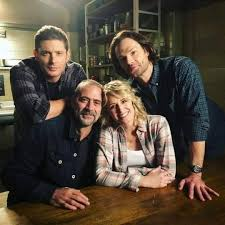

Supernatural é uma série de televisão americana de drama e terror criada por Eric Kripke. Transmitida originalmente pelo canal The WB (depois renomeado para The CW) de 2005 a 2020, a série conquistou uma enorme base de fãs ao redor do mundo.

Assista ao Trailer!
Curiosidades sobre Supernatural
Fato 1: A série passou por várias mudanças de direção e roteiristas ao longo dos anos.
Fato 2: O personagem Castiel foi introduzido na quarta temporada e rapidamente se tornou um dos favoritos dos fãs.
Fato 3: O "Impala 67" é um dos símbolos mais icônicos da série.
Fato 4: A série mistura elementos de mitologia religiosa, lendas urbanas e figuras históricas.